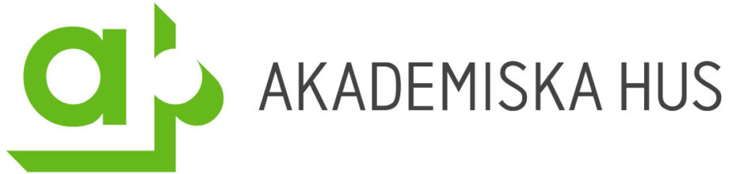
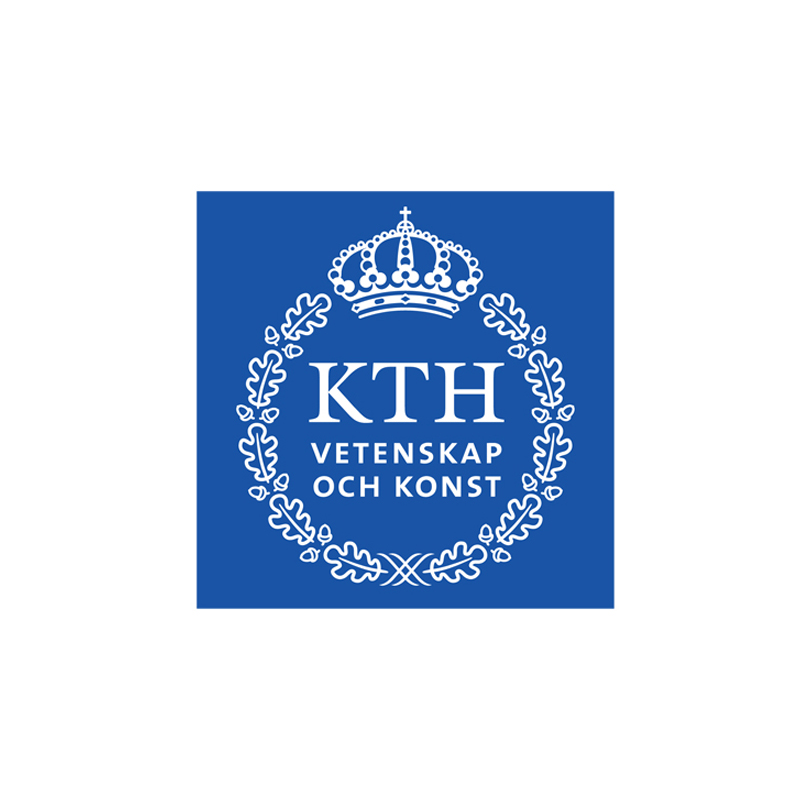

Sanningen bakom Akademiska Hus och KTH
Vi alla vet om att Akademiska Hus är just nu största fienden. Bara titta ut från något av husen på Campus Valla så kan du se hur de försöker "förbättra" Corson, tar och sätter upp staket vid en perfekt kulle att gå upp för, planerar att förstöra cykelupplevelsen för alla och, enligt rapporter av Helena Watson, avrättat en protesterande student. Men det är inte bara dessa öppna hemligheter som gör att man bör avsky Akademiska Hus. Arne Peat har lyckats göra en stor upptäckt som kopplar våra andra största fiender, KTH, till Akademiska Hus. Tyvärr så lyckades denna konspiration komma till honom innan han lyckades publicera sina fynd, men en nära vän till Arne Peat, Lars Eric Archibald, fick en tidig kopia av hans bevis för att de är en och samma organisation. Nedan följer detta bevis
Bevis
Bara titta på deras loggor, det är uppenbart Q.E.D.

